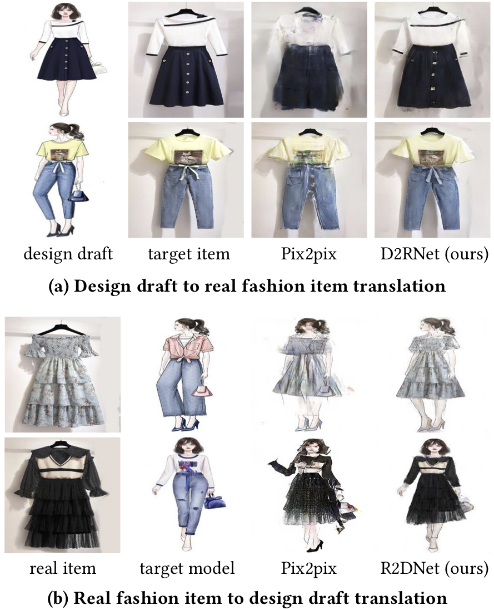
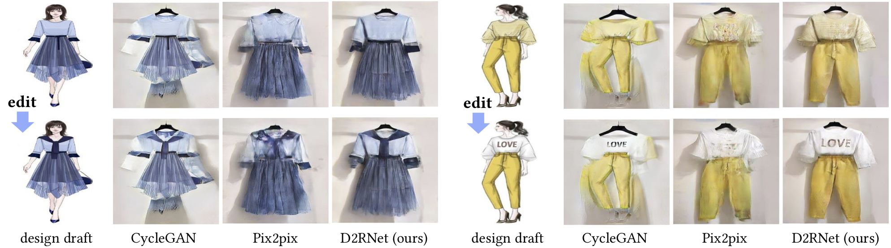

From Design Draft to Real Attire:
Unaligned Fashion Image Translation
|  |
Figure 1. Our method allows translations between unaligned design drafts and real fashion items. Compared with Pix2pix [1], our method generates accurate shapes and preserves vivid texture details.
|  |
Figure 2. Application in fashion design editing. Top row: input design draft and rendered fashion items by different methods. Bottom row: edited design draft and the corresponding modified fashion items.
Abstract
Fashion manipulation has attracted growing interest due to its great application value, which inspires many researches towards fashion images. However, little attention has been paid to fashion design draft. In this paper, we study a new unaligned translation problem between design drafts and real fashion items, whose main challenge lies in the huge misalignment between the two modalities. We first collect paired design drafts and real fashion item images without pixel-wise alignment. To solve the misalignment problem, our main idea is to train a sampling network to adaptively adjust the input to an intermediate state with structure alignment to the output. Moreover, built upon the sampling network, we present design draft to real fashion item translation network (D2RNet), where two separate translation streams that focus on texture and shape, respectively, are combined tactfully to get both benefits. D2RNet is able to generate realistic garments with both texture and shape consistency to their design drafts. We show that this idea can be effectively applied to the reverse translation problem and present R2DNet accordingly. Extensive experiments on unaligned fashion design translation demonstrate the superiority of our method over state-of-the-art methods.
Framework
Figure 3. Our D2RNet framework. First, the detail preservation network Gd and the shape correction network Gs translate texture and shape, respectively. Then, the two streams are combined by the fusion network to generate the final output. Notice that the result of Gd has more detailed patterns of the T-shirt but an irregular shape of the pants, while the shape of the pants in Gs is appropriate. The fused result C has both detailed patterns and fine shape.
Figure 4. Our R2DNet framework. The appearance generation network Ga consists of a saliency-based sampling layer and a generator. Using the input real fashion item r and the exemplary target model e, Ga generates a preliminary design draft image Ba. This result is then refined with the help of e and ta through the fusion network.
Resources
Citation
@inproceedings{Han2020Design, title={From Design Draft to Real Attire: Unaligned Fashion Image Translation}, author={Han, yu and Yang, Shuai and Wang, Wenjing and Liu, Jiaying}, booktitle={ACM Multimedia}, year={2020} }
Selected Results
Figure 5. Our D2RNet compared with CycleGAN [3], Pix2pix [1], Pix2pixHD [2] and SPADE [4].
Figure 6. Our R2DNet compared with CycleGAN [3], Pix2pix [1], StarGAN [5] and Pix2pixSC [6].
Reference
[1] P. Isola, J.Y. Zhu, T. Zhou, A.A. Efros. Image-to-image translation with conditional adversarial networks. CVPR 2017.
[2] T.C. Wang, M.Y. Liu, J.Y. Zhu, A. Tao, J. Kautz, B. Catanzaro. High-resolution image synthesis and semantic manipulation with conditional GANs. CVPR 2018.
[3] J.Y. Zhu, T. Park, P. Isola, A.A. Efros. Unpaired Image-to-Image Translation Using Cycle-Consistent Adversarial Networks. ICCV 2017.
[4] T. Park, M.Y. Liu, T.C. Wang, J.Y. Zhu. Semantic Image Synthesis with Spatially-Adaptive Normalization. CVPR 2019.
[5] Y. Choi, M. Choi, M. Kim, J.W. Ha, S. Kim, J. Choo. StarGAN: Unified Generative Adversarial Networks for Multi-Domain Image-to-Image Translation. CVPR 2018.
[6] M. Wang, G.Y. Yang, R.L. Li, R.Z. Liang, S.H. Zhang, P.M. Hall, S.M. Hu. Example-Guided Style-Consistent Image Synthesis from Semantic Labeling. CVPR 2019.